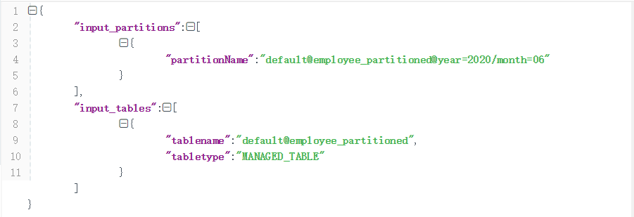

在企业中使用Hive构建离线数仓是一种十分普遍的方案。尽管Hive的使用场景是通过批处理的方式处理大数据，通常对处理时间不敏感。但是在资源有限的情况下，我们需要关注Hive的性能调优，从而方便数据的快速产出。同时，关于Hive的性能调优，也是面试中比较常见的问题，因此掌握Hive性能调优的一些方法，不仅能够在工作中提升效率而且还可以在面试中脱颖而出。本文会通过四个方面介绍Hive性能调优，主要包括：
- 性能调优的工具
- 设计优化
- 数据存储优化
- 作业优化
性能调优的工具
HQL提供了两个查看查询性能的工具：explain与analyze，除此之外Hive的日志也提供了非常详细的信息，方便查看执行性能和报错排查。
善用explain语句
explain语句是查看执行计划经常使用的一个工具，可以使用该语句分析查询执行计划，具体使用语法如下：
1 | EXPLAIN [FORMATTED|EXTENDED|DEPENDENCY|AUTHORIZATION] hql_query |
上面的执行语句中，有4个可选的关键字，其具体含义如下：
- FORMATTED：对执行计划进行格式化，返回JSON格式的执行计划
- EXTENDED：提供一些额外的信息，比如文件的路径信息
- DEPENDENCY：以JSON格式返回查询所依赖的表和分区的列表，从Hive0.10开始使用，如下图
 - AUTHORIZATION：列出需要被授权的条目，包括输入与输出，从Hive0.14开始使用,如下图
一个典型的查询执行计划主要包括三部分，具体如下：
- Abstract Syntax Tree (AST)：抽象语法树，Hive使用一个称之为antlr的解析生成器，可以自动地将HQL生成为抽象语法树
- Stage Dependencies：会列出运行查询所有的依赖以及stage的数量
- Stage Plans：包含了非常重要的信息，比如运行作业时的operator 和sort orders
举个栗子
假设有一张表：
1 | CREATE TABLE employee_partitioned |
查看执行计划：
1 | EXPLAIN |
执行计划概览：
如上图：Map/Reduce operator tree是抽象语法树AST部分；STAGE DEPENDENCIES包括三个阶段：Stage-0 、Stage-1及Stage-2，其中Stage-0 是root stage，即Stage-1与Stage-2依赖于Stage-0；STAGE PLANS部分，Stage-1与Stage2都包含一个Map Operator Tree和一个Reduce Operator Tree，Stage-0不包含map和reduce，仅仅是一个fetch数据的操作。
执行计划详细信息：
1 | STAGE DEPENDENCIES: |
巧用analyze语句
analyze语句可以收集一些详细的统计信息，比如表的行数、文件数、数据的大小等信息。这些统计信息作为元数据存储在hive的元数据库中。Hive支持表、分区和列级别的统计(与Impala类似)，这些信息作为Hive基于成本优化策略(Cost-Based Optimizer (CBO))的输入,该优化器的主要作用是选择耗费最小系统资源的查询计划。其实，在Hive3.2.0版本中，可以自动收集这些统计信息，当然也可以通过analyze语句进行手动统计表、分区或者字段的信息。具体的使用方式如下：
- 收集表的统计信息(非分区表)，当指定NOSCAN关键字时，会忽略扫描文件内容，仅仅统计文件的数量与大小，速度会比较快
1
2
3
4
5
6
7
8
9-- 不使用NOSCAN关键字
hive> ANALYZE TABLE user_behavior COMPUTE STATISTICS;
...
Table default.user_behavior stats: [numFiles=1, numRows=10, totalSize=229, rawDataSize=219]
Time taken: 23.504 seconds
-- 使用NOSCAN关键字
hive> ANALYZE TABLE user_behavior COMPUTE STATISTICS NOSCAN;
Table default.user_behavior stats: [numFiles=1, numRows=10, totalSize=229, rawDataSize=219]
Time taken: 0.309 seconds - 收集分区表的统计信息
1
2
3
4
5
6
7
8
9
10
11-- 收集具体分区的统计信息
hive> ANALYZE TABLE employee_partitioned PARTITION(year=2020, month=06) COMPUTE STATISTICS;
...
Partition default.employee_partitioned{year=2020, month=06} stats: [numFiles=1, numRows=0, totalSize=227, rawDataSize=0]
Time taken: 19.283 seconds
-- 收集所有分区的统计信息
hive> ANALYZE TABLE employee_partitioned PARTITION(year, month) COMPUTE STATISTICS;
...
Partition default.employee_partitioned{year=2020, month=06} stats: [numFiles=1, numRows=0, totalSize=227, rawDataSize=0]
Time taken: 17.528 seconds - 收集表的某个字段的统计信息
1
hive> ANALYZE TABLE user_behavior COMPUTE STATISTICS FOR COLUMNS user_id ;
尖叫提示：
可以通过设置：SET hive.stats.autogather=true，进行自动收集统计信息，对于INSERT OVERWRITE/INTO操作的表或者分区，可以自动收集统计信息。值得注意的是，LOAD操作不能够自动收集统计信息
一旦这些统计信息收集完毕，可以通过DESCRIBE EXTENDED/FORMATTED语句查询统计信息，具体使用如下：
1 | -- 查看一个分区的统计信息 |
常用日志分析
日志提供了job运行的详细信息，通过查看日志信息，可以分析出导致作业执行瓶颈的问题，主要包括两种类型的日志：系统日志和作业日志。
系统日志包含了Hive运行时的状态等信息，可以通过{HIVE_HOME}/conf/hive-log4j.properties文件进行配置，主要的配置选项有：
1 | hive.root.logger=WARN,DRFA ## 日志级别 |
也可以通过Hive cli命令行设置日志级别：$hive –hiveconf hive.root.logger=DEBUG,console这种方式只能在当前会话生效。
作业日志所包含的作业信息通常是由YARN管理的，可以通过yarn logs -applicationId
设计优化
分区表
对于一张比较大的表，将其设计成分区表可以提升查询的性能，对于一个特定分区的查询，只会加载对应分区路径的文件数据，所以执行速度会比较快。值得注意的是，分区字段的选择是影响查询性能的重要因素，尽量避免层级较深的分区，这样会造成太多的子文件夹。一些常见的分区字段可以是：
- 日期或者时间
比如year、month、day或者hour，当表中存在时间或者日期字段时，可以使用些字段。 - 地理位置
比如国家、省份、城市等 - 业务逻辑
比如部门、销售区域、客户等等
分桶表
与分区表类似，分桶表的组织方式是将HDFS上的文件分割成多个文件。分桶可以加快数据采样，也可以提升join的性能(join的字段是分桶字段)，因为分桶可以确保某个key对应的数据在一个特定的桶内(文件)，所以巧妙地选择分桶字段可以大幅度提升join的性能。通常情况下，分桶字段可以选择经常用在过滤操作或者join操作的字段。
索引
创建索引是关系型数据库性能调优的常见手段，在Hive中也不例外。Hive从0.7版本开始支持索引，使用索引相比全表扫描而言，是一种比较廉价的操作，Hive中创建索引的方式如下：
1 | CREATE INDEX idx_user_id_user_behavior |
上面创建的是COMPACT索引，存储的是索引列与其对应的block id的pair对。除了此种索引外，Hive还支持位图索引(BITMAP),使用方式如下：
1 | CREATE INDEX idx_behavior_user_behavior |
上面创建的索引时，使用了WITH DEFERRED REBUILD选项，该选项可以避免索引立即被创建，当建立索引时，可以使用LTER…REBUILD命令(见下面的示例)，值得注意的是：当基表(被创建索引的表)发生变化时，该命令需要被再次执行以便更新索引到最新的状态。
1 | ALTER INDEX idx_user_id_user_behavior ON user_behavior REBUILD; |
一旦索引创建成功，会生成一张索引表，表的名称格式为：数据库名表名_索引名，可以使用下面的命令查看索引：
1 | hive> SHOW TABLES '*idx*'; |
索引表包含索引列、HDFS的文件URI以及每行的偏移量，可以通过下面命令查看：
1 | -- 查看索引表结构 |
如果要删除索引，可以使用DROP INDEX命令，如下：
1 | DROP INDEX idx_user_id_user_behavior ON user_behavior; |
使用skewed/temporary表
Hive除了可以使用内部表、外部表、分区表、分桶表之外，也可以使用skewed/temporary表，也可以在一定程度上提升性能。
Hive从0.10版本之后开始支持skewed表，该表可以缓解数据倾斜。这种表之所以能够提升性能，是因为可以自动将造成数据倾斜的数据分割成不同的文件或者路径。使用示例如下：
1 | CREATE TABLE sample_skewed_table ( |
另外，还可以使用temporary临时表，将公共使用部分的数据集建成临时表，同时临时表支持SSD或memory的数据存储，从而可以提升性能。
数据存储优化
文件格式
Hive支持TEXTFILE, SEQUENCEFILE, AVRO, RCFILE, ORC,以及PARQUET文件格式，可以通过两种方式指定表的文件格式：
- CREATE TABLE … STORE AS
:即在建表时指定文件格式，默认是TEXTFILE - ALTER TABLE … [PARTITION partition_spec] SET FILEFORMAT
:修改具体表的文件格式
一旦存储文件格式为TEXT的表被创建，可以直接通过load命令装载一个text类型的文件。我们可以先使用此命令将数据装载到一张TEXT格式的表中，然后在通过INSERT OVERWRITE/INTO TABLE … SELECT命令将数据装载到其他文件格式的表中。
尖叫提示：
如果要改变创建表的默认文件格式，可以使用hive.default.fileformat=
TEXT, SEQUENCE和 AVRO文件是面向行的文件存储格式，不是最佳的文件格式，因为即便是只查询一列数据，使用这些存储格式的表也需要读取完整的一行数据。另一方面，面向列的存储格式(RCFILE, ORC, PARQUET)可以很好地解决上面的问题。关于每种文件格式的说明，如下：
- TEXTFILE
创建表时的默认文件格式，数据被存储成文本格式。文本文件可以被分割和并行处理，也可以使用压缩，比如GZip、LZO或者Snappy。然而大部分的压缩文件不支持分割和并行处理，会造成一个作业只有一个mapper去处理数据，使用压缩的文本文件要确保文件的不要过大，一般接近两个HDFS块的大小。
- SEQUENCEFILE
key/value对的二进制存储格式，sequence文件的优势是比文本格式更好压缩，sequence文件可以被压缩成块级别的记录，块级别的压缩是一个很好的压缩比例。如果使用块压缩，需要使用下面的配置：set hive.exec.compress.output=true; set io.seqfile.compression.type=BLOCK
- AVRO
二进制格式文件，除此之外，avro也是一个序列化和反序列化的框架。avro提供了具体的数据schema。
- RCFILE
全称是Record Columnar File，首先将表分为几个行组，对每个行组内的数据进行按列存储，每一列的数据都是分开存储，即先水平划分，再垂直划分。
- ORC
全称是Optimized Row Columnar，从hive0.11版本开始支持，ORC格式是RCFILE格式的一种优化的格式，提供了更大的默认块(256M)
- PARQUET
另外一种列式存储的文件格式，与ORC非常类似，与ORC相比，Parquet格式支持的生态更广，比如低版本的impala不支持orc格式
压缩
压缩技术可以减少map与reduce之间的数据传输，从而可以提升查询性能，关于压缩的配置可以在hive的命令行中或者hive-site.xml文件中进行配置
1 | SET hive.exec.compress.intermediate=true |
开启压缩之后，可以选择下面的压缩格式：
关于压缩的编码器可以通过mapred-site.xml, hive-site.xml进行配置，也可以通过命令行进行配置,比如：
1 | -- 中间结果压缩 |
存储优化
经常被访问的数据称之为热数据，可以针对热数据提升查询的性能。比如通过增加热数据的副本数，可以增加数据本地性命中的可能性，从而提升查询性能，当然这要与存储容量之间做出权衡。
1 | $ hdfs dfs -setrep -R -w 4 /user/hive/warehouse/employee |
注意，大量的小文件或者冗余副本会造成namenode节点内存耗费，尤其是大量小于HDFS块大小的文件。HDSF本身提供了应对小文件的解决方案：
- Hadoop Archive/HAR:将小文件打包成大文件
- SEQUENCEFILE格式：将小文件压缩成大文件
- CombineFileInputFormat:在map和reduce处理之前组合小文件
- HDFS Federation:HDFS联盟，使用多个namenode节点管理文件
对于Hive而言，可以使用下面的配置将查询结果的文件进行合并，从而避免产生小文件：
- hive.merge.mapfiles: 在一个仅有map的作业中，合并最后的结果文件，默认为true
- hive.merge.mapredfiles:合并mapreduce作业的结果小文件 默认false，可以设置true
- hive.merge.size.per.task:定义合并文件的大小，默认 256,000,000，即256MB
- hive.merge.smallfiles.avgsize: T触发文件合并的文件大小阈值，默认值是16,000,000
当一个作业的输出结果文件的大小小于hive.merge.smallfiles.avgsize设定的阈值，并且hive.merge.mapfiles与hive.merge.mapredfiles设置为true，Hive会额外启动一个mr作业将输出小文件合并成大文件。
作业优化
本地模式
当Hive处理的数据量较小时，启动分布式去处理数据会有点浪费，因为可能启动的时间比数据处理的时间还要长，从Hive0.7版本之后，Hive支持将作业动态地转为本地模式，需要使用下面的配置：
1 | SET hive.exec.mode.local.auto=true; -- 默认 false |
一个作业只要满足下面的条件，会启用本地模式
- 输入文件的大小小于hive.exec.mode.local.auto.inputbytes.max配置的大小
- map任务的数量小于hive.exec.mode.local.auto.input.files.max配置的大小
- reduce任务的数量是1或者0
JVM重用
默认情况下，Hadoop会为为一个map或者reduce启动一个JVM，这样可以并行执行map和reduce。当map或者reduce是那种仅运行几秒钟的轻量级作业时，JVM启动进程所耗费的时间会比作业执行的时间还要长。Hadoop可以重用JVM，通过共享JVM以串行而非并行的方式运行map或者reduce。JVM的重用适用于同一个作业的map和reduce，对于不同作业的task不能够共享JVM。如果要开启JVM重用，需要配置一个作业最大task数量，默认值为1，如果设置为-1，则表示不限制：
1 | SET mapreduce.job.jvm.numtasks=5; |
这个功能的缺点是，开启JVM重用将一直占用使用到的task插槽，以便进行重用，直到任务完成后才能释放。如果某个“不平衡的”job中有某几个reduce task执行的时间要比其他Reduce task消耗的时间多的多的话，那么保留的插槽就会一直空闲着却无法被其他的job使用，直到所有的task都结束了才会释放。
并行执行
Hive的查询通常会被转换成一系列的stage，这些stage之间并不是一直相互依赖的，所以可以并行执行这些stage，可以通过下面的方式进行配置：
1 | SET hive.exec.parallel=true; -- 默认false |
并行执行可以增加集群资源的利用率，如果集群的资源使用率已经很高了，那么并行执行的效果不会很明显。
Fetch模式
Fetch模式是指Hive中对某些情况的查询可以不必使用MapReduce计算。可以简单地读取表对应的存储目录下的文件，然后输出查询结果到控制台。在开启fetch模式之后，在全局查找、字段查找、limit查找等都启动mapreduce，通过下面方式进行配置：
1 | hive.fetch.task.conversion=more |
JOIN优化
普通join
普通join又称之为reduce端join，是一种最基本的join，并且耗时较长。对于大表join小表，需要将大表放在右侧，即小表join大表。新版的hive已经对小表JOIN大表和大表JOIN小表进行了优化。小表放在左边和右边已经没有明显区别。
map端join
map端join适用于当一张表很小(可以存在内存中)的情况，即可以将小表加载至内存。Hive从0.7开始支持自动转为map端join，具体配置如下：
1 | SET hive.auto.convert.join=true; -- hivev0.11.0之后默认true |
一旦开启map端join配置，Hive会自动检查小表是否大于hive.mapjoin.smalltable.filesize配置的大小，如果大于则转为普通的join，如果小于则转为map端join。
关于map端join的原理，如下图所示：
首先，Task A(客户端本地执行的task)负责读取小表a，并将其转成一个HashTable的数据结构，写入到本地文件，之后将其加载至分布式缓存。
然后，Task B任务会启动map任务读取大表b，在Map阶段，根据每条记录与分布式缓存中的a表对应的hashtable关联，并输出结果。
注意：map端join没有reduce任务，所以map直接输出结果，即有多少个map任务就会产生多少个结果文件。
Bucket map join
bucket map join是一种特殊的map端join，主要区别是其应用在分桶表上。如果要开启分桶的map端join，需要开启一下配置：
1 | SET hive.auto.convert.join=true; |
在一个分桶的map端join中，所有参与join的表必须是分桶表，并且join的字段是分桶字段(通过CLUSTERED BY指定)，另外，对于大表的分桶数量必须是小表分桶数量的倍数。
与普通的join相比，分桶join仅仅只读取所需要的桶数据，不需要全表扫描。
Sort merge bucket (SMB) join
SMBjoin应用与分桶表，如果两张参与join的表是排序的，并且分桶字段相同，这样可以使用sort-merge join，其优势在于不用把小表完全加载至内存中，会读取两张分桶表对应的桶，执行普通join(包括map与reduce)配置如下：
1 | SET hive.input.format= |
Sort merge bucket map (SMBM) join
SMBM join是一种特殊的bucket map join，与map端join不同的是，不用将小表的所有数据行都加载至内存中。使用SMBM join，参与join的表必须是排序的，有着相同的分桶字段，并且join字段与分桶字段相同。配置如下：
1 | SET hive.auto.convert.join=true; |
Skew join
当被处理的数据分布极其不均匀时，会造成数据倾斜的现象。Hive可以通过如下的配置优化数据倾斜的情况：
1 | -- 默认false，如果数据倾斜，可以将其设置为true |
尖叫提示：
数据倾斜在group by的情况下也会发生，所以可以开启一个配置：set hive.groupby.skewindata=true，优化group by出现的数据倾斜，一旦开启之后，执行作业时会首先额外触发一个mr作业，该作业的map任务的输出会被随机地分配到reduce任务上，从而避免数据倾斜
执行引擎
Hive支持多种执行引擎，比如spark、tez。对于执行引擎的选择，会影响整体的查询性能。使用的配置如下：
1 | SET hive.execution.engine=<engine>; -- <engine> = mr|tez|spark |
- mr:默认的执行引擎，在Hive2.0版本版本中被标记过时
- tez:可以将多个有依赖的作业转换为一个作业，这样只需写一次HDFS，且中间节点较少，从而大大提升作业的计算性能。
- spark:一个通用的大数据计算框架，基于内存计算，速度较快
优化器
与关系型数据库类似，Hive会在真正执行计算之前，生成和优化逻辑执行计划与物理执行计划。Hive有两种优化器：Vectorize(向量化优化器)与Cost-Based Optimization (CBO,成本优化器)。
向量化优化器
向量化优化器会同时处理大批量的数据，而不是一行一行地处理。要使用这种向量化的操作，要求表的文件格式为ORC，配置如下：
1 | SET hive.vectorized.execution.enabled=true; -- 默认 false |
成本优化器
Hive的CBO是基于apache Calcite的，Hive的CBO通过查询成本(有analyze收集的统计信息)会生成有效率的执行计划，最终会减少执行的时间和资源的利用，使用CBO的配置如下：
1 | SET hive.cbo.enable=true; --从 v0.14.0默认true |
总结
本文主要介绍了Hive调优的基本思路。总共分为四部分，首先介绍了调优的基本工具使用(explain、analyze);接着从表设计层面介绍了一些优化策略(分区、分桶、索引)；然后介绍了数据存储方面的优化(文件格式、压缩、存储优化)；最后从作业层面介绍了优化的技巧(开启本地模式、JVM重用、并行执行、fetch模式、Join优化、执行引擎与优化器)。本文主要为Hive性能调优提供一些思路，在实际的操作过程中需要具体问题具体分析。总之一句话，重剑无锋，为作业分配合理的资源基本上可以满足大部分的情况，适合的就是最好的，没有必要追求狂拽酷炫的技巧，应该把更多的精力放在业务问题上，因为工具的存在的价值是为了解决业务问题的，切不可本末倒置。